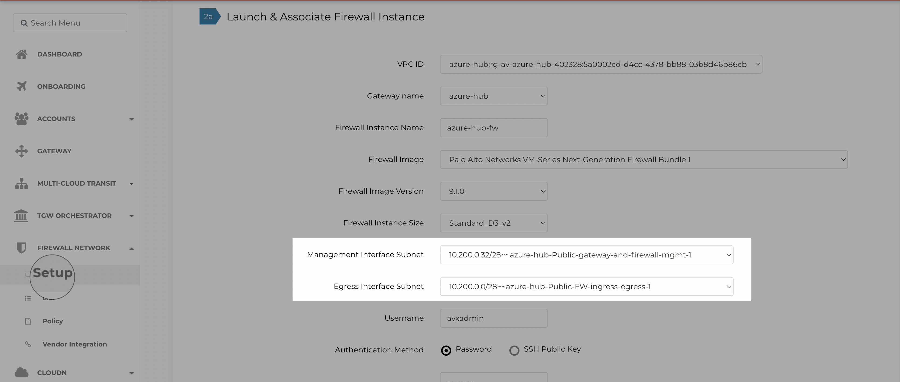
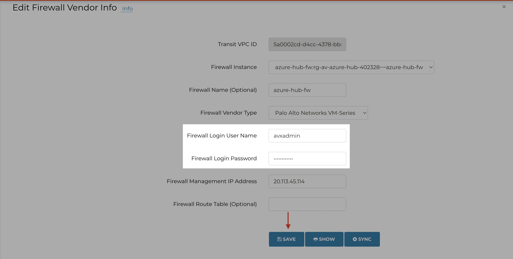
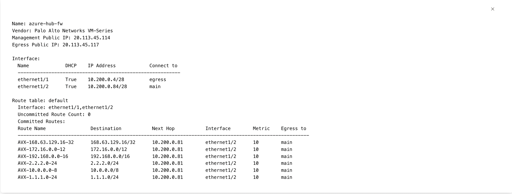
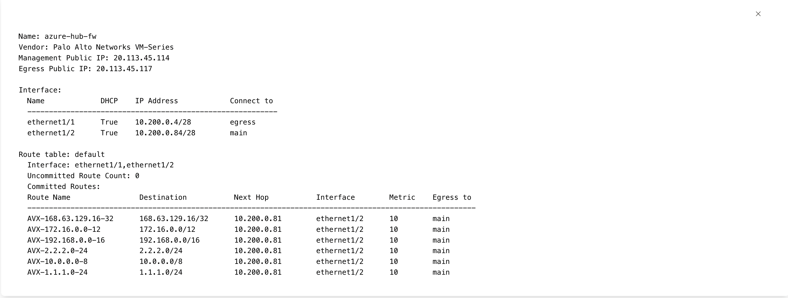
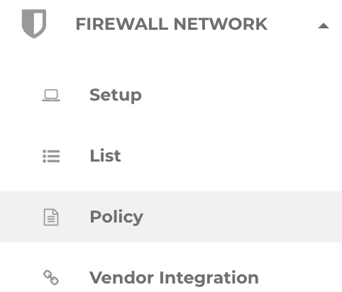
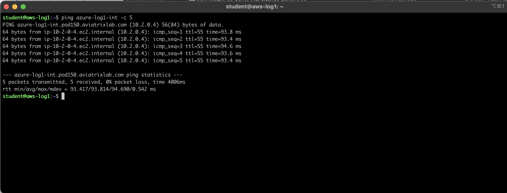
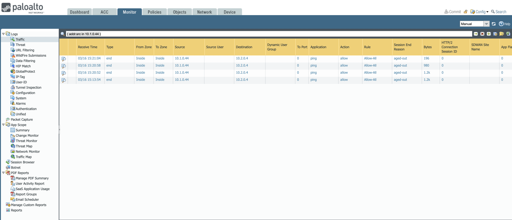

Lab 3 FireNet#
3.0 _ What’s in the lab?#
Having setup the MSP backbone and segmented our Network, and deployed our NGFWs Aviatrix Firewall Network (aka firenet) is a turnkey solution to deploy and manage firewall instances in the cloud. Firewall Network significantly simplifies virtual firewall deployment and allows the firewall to inspect East_West as well as North_South traffic. In addition, Firewall Network allows you to scale firewall deployment to multi AZ and multi instances/VMs in maximum throughput active/active state without the SNAT requirement.
3.1 _ Current Topology#
 Figure 1: Current State of the Topology
Figure 1: Current State of the Topology
You can see clearly that Firewalls within AWS Hub have already been provisioned. The objective behind this lab is to deploy the FireNet within Azure Hub.
3.2 _ Deploying Firewalls in Azure#
FireNet is to be configured from the controller. The steps are detailed in Figure2. Please be extremely careful before to ensure all the parameters match exactly before launching the Firewall.

 Figure 2: Launch FW in Azure
Figure 2: Launch FW in Azure
3.3 _ Connect to the FW#
Please ba patient, it might take up to 20 minutes for the FW deployment to finish.
You can find the Public IP address of the PAN VM_series mgmt interface here.
 Figure 3: Find the Firewall IP
Figure 3: Find the Firewall IP
Once you have that, you can connect to the FW through your PC’s browser. Please make sure to login with the same credentials that you have assigned during the creationl.
 Figure 4: Login to the Firewall
Figure 4: Login to the Firewall
3.4 _ Vendor Integration#
Aviatrix’s Vendor Integration feature can install the relevant routes within the Azure Firewall to ensure it knows how to route the traffic. This is shown in Figures 5_7.
 Figure 5: Vendor Integration Azure FW
Figure 5: Vendor Integration Azure FW
Figure 6: Vendor Integration Azure Save
 Figure 7: Vendor Integration Azure Sync
Figure 7: Vendor Integration Azure Sync
3.5 Inspection Policy#
The firewall is up, has the necessary policies as part of the bootsrapping and has the necessary routes as part of vendor Integration. Now we can selectively decide which traffic is to be inspected by the NGFW.
Let’s add Azure Shared Services to Inspection Policy.
Figure 8: Add Azure Shared Svcs to Inspected List
 Figure 9: Add Azure Shared Svcs to Inspected List
Figure 9: Add Azure Shared Svcs to Inspected List
3.6 _ Send Traffic#
We will issue a ping from AWS_Log1 to Azure Log1 as shown below:
Figure 10: Ping from AWS_Log1 to Azure Log1
We will also issue a ping from Customer A application to Azure Log2 as shown below:
 Figure 11: Ping from Customer_A App to to Azure Log2
Figure 11: Ping from Customer_A App to to Azure Log2
3.7 _ Monitor Traffic on the Firewall#
Figure 12: Firewall Monitoring Ping from AWS_Log1 to Azure Log1
 Figure 13: Firewall Monitoring Ping from Customer_A App to to Azure Log2
Figure 13: Firewall Monitoring Ping from Customer_A App to to Azure Log2
3.8 _ Conclusion#
In this lab we learned to deploy Firewall Network within Azure by going through all necessary steps from creating the Firewall, Bootstrapping process, Vendor Integration, Inspection Policy and finally monitoring to ensure intended traffic was actually inspected by the PAN VM_series FWs.